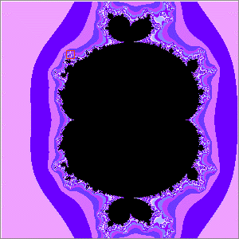
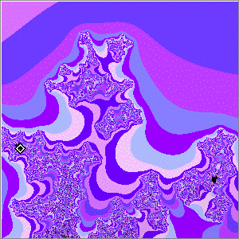
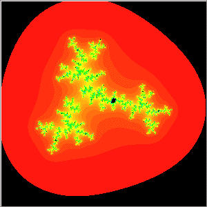
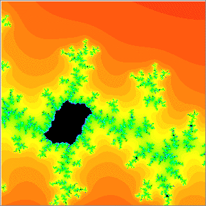

| In the Dichotomy Theorem for Julia sets obtianed by iterating a
polynomial function f(z) we observed |
the Julia set is connected if the orbits of all critical points remain bounded, and |
the Julia set is a Cantor set if the orbits of all critical points escape to infinity. |
| For polynomials having a single critical point, f(z) = zn + c for example, Julia
sets must be either connected or Cantor sets, and the Mandelbrot set is the collection of all c for which the
Julia set is connected. |
| On the other hand, the function f(z) = z2/2 + z3/3 + c has
two critical points,
z = 0 and z = -1, so we have several possible definitions for the analog of the Mandelbrot set. |
| To illustrate the greater complexity that can arise for functions having several critical points, consider the polynomial f(z) and look at the
Mandelbrot set consisting of those c for which the iterates of z = 0 remain bounded. |
|  |
 |
| Zoom in on the red box | Click the picture for an additional zoom,
revealing that the black spot is a (quadratic!) Mandelbrot set. |
|  |  |
| Here is the Julia set for the point selected in the above right picture. |
Here is a magnification of a portion of the Julia set. |
|
| This Julia set is not connected, yet neither is it a Cantor set: substantially increasing the maximum number of iterations
Does not alter the filled-in balck regions of the Julia set. |
|